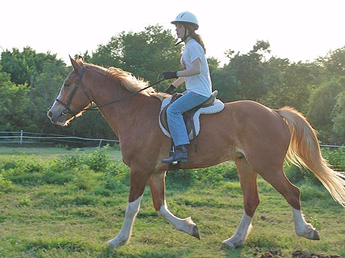

Amy riding Wiley About once a week a couple of kids, Amy
and Steven,
come out and ride. Steven's pretty tall,
so he's usually on Bob,
and Amy's kind of short, so she's usually
on Thuy. With Thuy
off on vacation at the parents' for the
summer, Amy had to choose
between Wiley and Adiron. While Adiron
is cuter (in my opinion),
he's really only had 8 or so rides on
him now.
Taking that into consideration Amy chose
Wiley.
Click
here to see Steven on Bob
Getting settled. Wiley's not used
to someone so small. I wondered what ways he'd test her.
Here Wiley is asking me if he needs
to listen to her.
They both relaxed pretty quickly.
She had the most trouble gettinng
him to go into the corners. Sometimes he made the decision to turn without
waiting for her.
He listened to her and responds properly
here by softening and then stopping.
I was really pleased with how well
they worked together. Amy can't get a horse into a dressage frame, but
he went where she wanted at the speed she wanted.
I give some suggestions to Amy, like
hands down, but she's still learning. Wiley was quite tolerant even though
sometimes he got mixed signals.

Obedient and just trotting along.
Amy's gotten more aware of preparing for turns and not running into Steven
on Bob.
The kids do whatever they like around
the arena area. Julie, their mom, sometimes holds the extra horse (this
time Adiron) while she watches.
Amy is at the stage of going over
the low and medium cavalletti. Since she was new to Wiley, we left it at
the lowest height.
My timing was off, but here's Wiley
calmly trotting over. If he's pointed in the general direction, he usually
goes over now.
They got used to each other and did
quite a bit of trotting around the arena.
Julie and Adiron watching on. Adiron
likes being brought out when the others get worked. I feel better being
on the ground when the kids are up or I'd ride him. So, Julie led Adiron
around and gave him lots of attention.